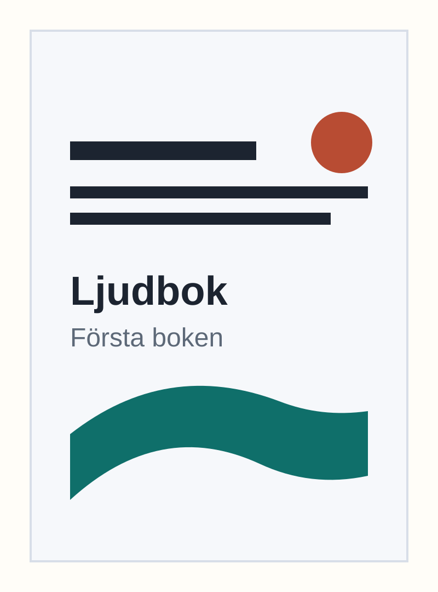

Victoria Z Workshop
Första boken
Lyssna på bokens kompletterande ljudfiler. Författare: Victoria Z Workshop
Det här är en första testsida. När boken publiceras bör QR-koden leda till den här stabila sidan, inte direkt till en MP3-fil.
Kapitel och ljudfiler
Varje kapitel kan spelas upp direkt i webbläsaren. Ljudfilerna är offentliga och kan inte skyddas helt från kopiering; den här första versionen är främst till för bokbonus och marknadstest.
Framtida flytt
Just nu hämtas ljudet från audio-files/. Om ljudet senare flyttas till objektlagring, ett CDN eller en ljudplattform behöver du bara ändra mediaBaseUrl eller src i assets/site-config.js. QR-kodens adress kan vara densamma.